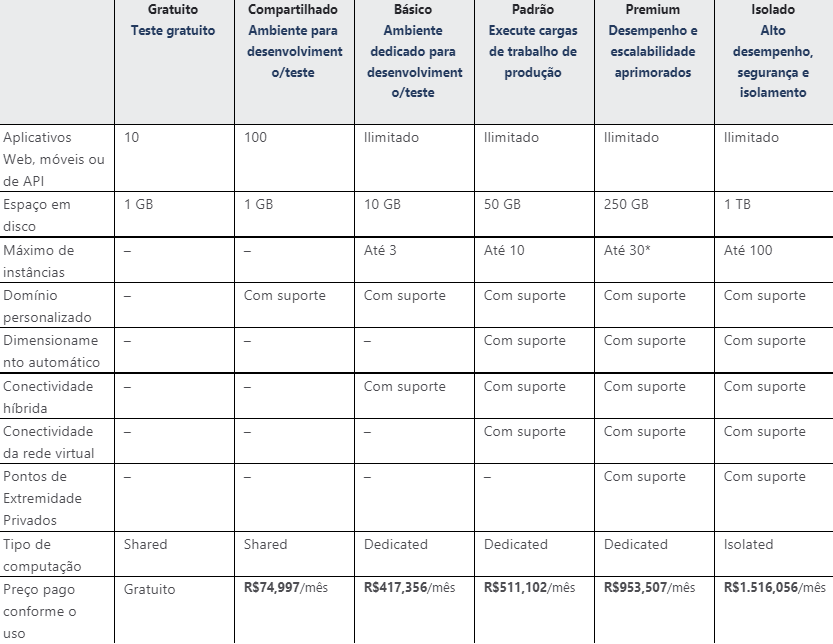

Governança e Serviços de TI
Integrantes
Anderson Paulo
Aristides Henrique
Lara Ayrolla
Matheus Esteves
Mike Wolner
Catálogo


Anderson Paulo
Aristides Henrique
Lara Ayrolla
Matheus Esteves
Mike Wolner
| Gerador do documento | Aristides Henrique |
| Gerente de Negócios | Anderson Paulo |
| Versão | Data | Revisão | Autor |
| 1.5 | 12/2021 |
Adicionando uma nova linha à tabela Crédito de Serviço para incluir a porcentagem de tempo de atividade mensal e crédito de serviço. |
Aristides |
| 1.4 | 07/2016 |
Revisado para refletir a alteração no status de visualização prévia gratuita do aplicativo em 27/07/2016. |
Lara |
| 1.3 | 07/2016 |
Revisado para refletir as disponibilidade geral dos Aplicativos Lógicos em 21/07/2016. |
Anderson |
| 1.2 | 01/2016 |
Revisado para refletir as disponibilidade geral dos Aplicativos Móveis em 01/12/2015. |
Matheus |
| 1.1 | 09/2015 |
Atualizamos o SLA de Serviços de Aplicativos para refletir o novo SKU de Serviços de Aplicativos. |
Mike |
| 1.0 | 07/2015 | - | - |
(Ao assinar abaixo, o cliente concorda com todos os termos e as condições definidas no presente acordo.)
| Cliente | Assinatura | Data |
1
1. Acordo Geral ........................................................................................................................................................ 3
2. Metas e Objetivos ................................................................................................................................................. 3
3. Responsáveis ........................................................................................................................................................ 3
4. Ambiente de Serviço ............................................................................................................................................ 4
5. Revisão Periódica ................................................................................................................................................. 4
6. Contrato de Serviço .............................................................................................................................................. 5
6.1. Escopo do Serviço ........................................................................................................................................ 5
6.2. Responsabilidades do Cliente....................................................................................................................... 5
6.3. Responsabilidades do Provedor de Serviços ................................................................................................ 5
6.4. Serviços Pressupostos .................................................................................................................................. 5
7. Gerenciamento do Serviço ................................................................................................................................... 6
8. Custos dos Serviços ............................................................................................................................................. 8
2
Este Contrato de Nível de Serviço para Serviços Online da Microsoft (este “SLA”) faz parte do seu contrato de licenciamento por volume da Microsoft (o “Contrato”). Os termos em letras maiúsculas usados, mas não definidos, neste SLA deverão ter o significado atribuído a eles no Contrato. Este SLA se aplica aos Serviços Online da Microsoft listados neste documento (um “Serviço” ou os “Serviços”), mas não se aplica a serviços de marcas separadas disponibilizados com ou relacionados aos Serviços ou a qualquer software nas instalações que seja parte de qualquer Serviço. Se nós não atingirmos e mantivermos os Níveis de Serviço para cada Serviço conforme descrito neste SLA, você poderá estar qualificado a obter um crédito proporcional aos valores de serviços mensais. Nós não modificaremos os termos do seu SLA durante o prazo inicial da sua assinatura; no entanto, se você renovar sua assinatura, a versão atual deste SLA no momento do início do prazo de renovação se aplicará integralmente ao prazo de renovação. Nós forneceremos uma notificação de, pelo menos, 90 dias por alterações substanciais adversas a este SLA.
O Serviço de Aplicativo executa aplicativos Web e de API em escala, ao mesmo tempo que funciona diretamente com outras soluções primárias ou de terceiros para atender aos requisitos da solução de aplicativo que você desejar.
Os seguintes Provedores e o Cliente serão usados como base do acordo e representam os principais intervenientes associados a este SLA: A seguir, as partes interessadas são responsáveis pela implantação e suporte contínuo do presente acordo:
| Nome | Contato |
| A10 Thunder | Support@a10networks.com |
| Abnormal Security | Abnormalsecurity@mww.com |
| Active Cypher | support@activecypher.com |
3
As informações a seguir fornecem detalhes sobre os usuários, ferramentas, aplicações e/ou outros componentes apoiadas por este SLA:
Número de usuários: [usuários finais]
Número de usuários simultâneos: [usuários simultâneos]
Número de usuários registrados: [usuários registrados]
| Descrição do usuário-base | Encriptação de dados e armazenamento |
| Âmbito de aplicações | Processamento, Banco de dados |
| Infraestrutura de Serviços: | Rede, Segurança, Armazenamento |
| Dependências do SLA: | Acordo Nível Operacional |
| Descrição do usuário-base | Assegurar dados |
| Âmbito de aplicações | Banco de dados, Segurança |
| Infraestrutura de Serviços: | Rede, Segurança, Armazenamento |
| Dependências do SLA: | Acordo Nível Operacional |
Este acordo é válido a partir da data efetiva delineada neste documento e é válido até a data da rescisão. Este acordo deverá ser revisto pelo menos uma vez por ano fiscal, no entanto, em vez de uma revisão durante o período especificado, o atual acordo permanecerá em vigor.
O Gerente de Negócios é responsável por facilitar a revisões regulares do presente documento. O conteúdo deste documento pode ser alterado conforme necessário, desde que o mútuo acordo é obtido a partir do primeiro comunicado a todos os interessados e as partes afetadas. O proprietário do documento vai incorporar todas as revisões ulteriores e de obter acordos mútuos / as aprovações necessárias.
Gerente de Negócios: Anderson Paulo
Periodicidade da revisão: Anual
Data prevista para revisão: 12/2022
Este acordo será enviado para os seguintes locais e vai ser acessível a todas as partes interessadas:
Local do Documento: link
4
Os seguintes parâmetros detalhados nesta seção do contrato de serviço são da responsabilidade do prestador do serviço, no apoio contínuo do presente acordo.
Nós garantimos que todos os Aplicativos que estão executando em uma assinatura do cliente estarão disponíveis 99,95% do tempo. Nenhum SLA é fornecido para Aplicativos nas camadas Gratuita ou Compartilhada.
As responsabilidades e / ou requisitos dos clientes em apoio do presente acordo incluem:
As responsabilidades do provedor do serviço incluem:
Pressupostos relacionados com o âmbito de serviços e / ou componentes incluem:
5
| ITENS | DESCRIÇÃO |
| Aquisição | Detalhamento claro de todos os serviços prestados, além da disponibilização de uma tabela (que pode ser vista no tópico 8) com os benefícios incluídos em cada tipo de assinatura. |
| Controle de mudanças | Quando são realizadas mudanças e atualizações, a maioria delas é realizada sem nenhum impacto nas máquinas virtuais hospedadas. No entanto, há casos em que as atualizações possuem um impacto. Nesses casos, duas janelas são disponibilizadas, sendo elas a janela de autoatendimento a a janela de manutenção agendada. Podem ser utilizados o portal do Azure, o PowerShell, a API REST e a CLI para consultar as janelas de manutenção para VMs e iniciar a manutenção de autoatendimento. |
| Controle de qualidade de processo de software | Serviço totalmente gerenciado com manutenção de infraestrutura, aplicação de patch de segurança e dimensionamento internos. |
| Controle de versões | Azure Repos dá suporte a dois tipos de controle de versão: Git e Controle de Versão do Team Foundation (TFVC). |
| Desenvolvimento e Gerência de Requisitos | O serviço possui documentação extensa e detahada que pode ser vista no site da Microsoft. Nela, estão disponíveis informações como artigos, gráficos, tabelas e diversos tipos de dados que demonstram a eficiência do serviço e o atentimento às especificações exigidas. |
| Manutenção | O Azure realiza atualizações periodicamente para aumentar a confiabilidade, o desempenho e a segurança da infraestrutura de host para máquinas virtuais. As atualizações são as alterações como, por exemplo, aplicação de patches no ambiente de hospedagem ou atualização e desativação de hardware. A maioria dessas atualizações é realizada sem nenhum impacto nas máquinas virtuais hospedadas. No entanto, há casos em que as atualizações possuem um impacto. |
| Certificação de qualidade de processo | O Azure possui uma série de certificações, tanto da qualidade do proccesso, quanto das conformidades regulatórias globais e regionais. A lista completa pode ser acessada através do link: link |
| Segurança | O serviço possui AIP (Proteção de Informações do Azure), quer permite com que o usuário selecione rótulos para proteger conteúdos sensíveis e confidenciais. |
| Suporte/help desk | Todos os clientes do Azure tem direito ao plano básico de suporte, mas é possível pagar por diferentes planos para possuir mais vantagens e benefícios. |
| Testes | Na documentação da Microsoft, é possível encontrar artigos detalhados quanto aos resultados de diversos testes de software realizados nos serviços Azure ao longo do tempo. Além disso, ferramentas são disponibilizadas para que os usuários consigam realizar testes em tempo real e garantir que o serviço está funcionando como prometido. |
| Capacidade de infra-estrutura | A infraestrutura global do Azure é composta por dois componentes principais: a infraestrutura física e os componentes de rede de conexão. O componente físico é composto por mais de 200 datacenters físicos, organizados em regiões, e está vinculado a uma das maiores redes interconectadas do planeta. Com a conectividade da rede global do Azure, cada um dos datacenters do Azure fornece alta disponibilidade, baixa latência, escalabilidade e os avanços mais recentes na infraestrutura de nuvem. |
| Funcionários tecnicamente competentes | Todos os prospectivos funcionários são rigidamente avaliados, sendo selecionados os mais capacitados para determinada vaga. É necessária a comprovação de formação e habilidades antes da contratação, assim como também são realizadas avaliações de desempenho para funcionários efetivamente contratados. |
| Previsão de continuidade do serviço | Por ser um serviço de assinatura, ele estará disponível pelo tempo em que o usuário mantiver o pagamento. |
| Tecnicamente competente na área de negócio | Todos os seerviços Azure são disponibilizados pela Microsoft, que é uma das maiores e mais renomadas empresas de tecnologia da atualidade. |
| Utilização de padrões | Padrões de segurança e conformidade rigorosos, incluindo SOC e PCI, para implantações diretas na nuvem, no Azure Government e localmente. |
6
O preço do Serviço de Aplicativo é baseado em camadas de plano com recursos e funcionalidades diferentes. A tabela de preços para a região Sudeste do Brasil em BRL (reais brasileiros) pode ser vista a seguir. É importante destacar que o preço em reais (R$) é apenas uma referência. Esta é uma transação internacional e, como tal, seu preço final está sujeito a taxas de câmbio e à inclusão de IOF. Não será emitida uma NFe.
“Minutos de Implantação” é o número total de minutos pelos quais um determinado Aplicativo foi configurado para ser executado no Microsoft Azure durante um mês de cobrança. Os Minutos de Implantação são medidos a partir de quando o Aplicativo foi criado ou de quando o Cliente iniciou uma ação que resultou na execução do Aplicativo até o momento em que o Cliente iniciou uma ação que resultaria na parada ou exclusão do Aplicativo.
“Máximo de Minutos Disponíveis” é a soma de todos os Minutos de Implantação em todos os Aplicativos implantados pelo Cliente em uma determinada assinatura do Microsoft Azure durante um mês de cobrança.
“Aplicativo” é um Aplicativo da Web, Aplicativo Voltado para Celular ou Aplicativo Lógico implantado pelo Cliente no Serviço de Aplicativos, com exceção dos aplicativos da Web nas camadas Gratuita e Compartilhada.
Tempo de Inatividade: O total acumulado de Minutos de Implantação em todos os Aplicativos implantados pelo Cliente em uma determinada assinatura do Microsoft Azure durante os quais o Aplicativo permanece indisponível. Um minuto é considerado indisponível para um determinado Aplicativo quando não há conectividade entre o Aplicativo e o gateway de Internet da Microsoft.
Porcentagem de Tempo de Atividade Mensal: A Porcentagem de Tempo de Atividade Mensal é calculada usando a seguinte fórmula:
Porcentagem de Tempo de Atividade Mensal = (Máximo de Minutos Disponíveis - Tempo de Inatividade)/(Máximo de Minutos Disponíveis) x 100
| PORCENTAGEM DE TEMPO DE ATIVIDADE MENSAL | CRÉDITO DE SERVIÇO |
| <99,95% | 10% |
| <99% | 25% |
| <95% | 100% |
Termos Adicionais: Os Créditos de Serviço são aplicáveis apenas aos valores atribuíveis ao uso que você faz dos Aplicativos da Web, Aplicativos Voltados para Celulares ou Aplicativos Lógicos e não aos valores atribuíveis a outros tipos de aplicativos disponíveis por meio do Serviço de Aplicativos, que não são cobertos por este SLA.
8